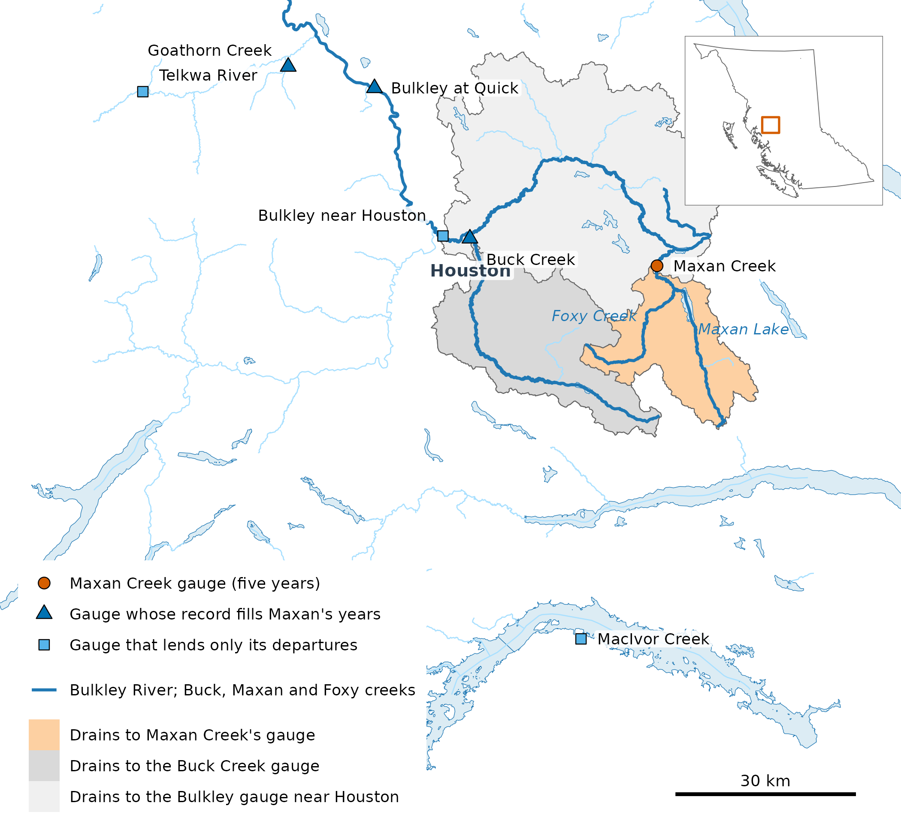
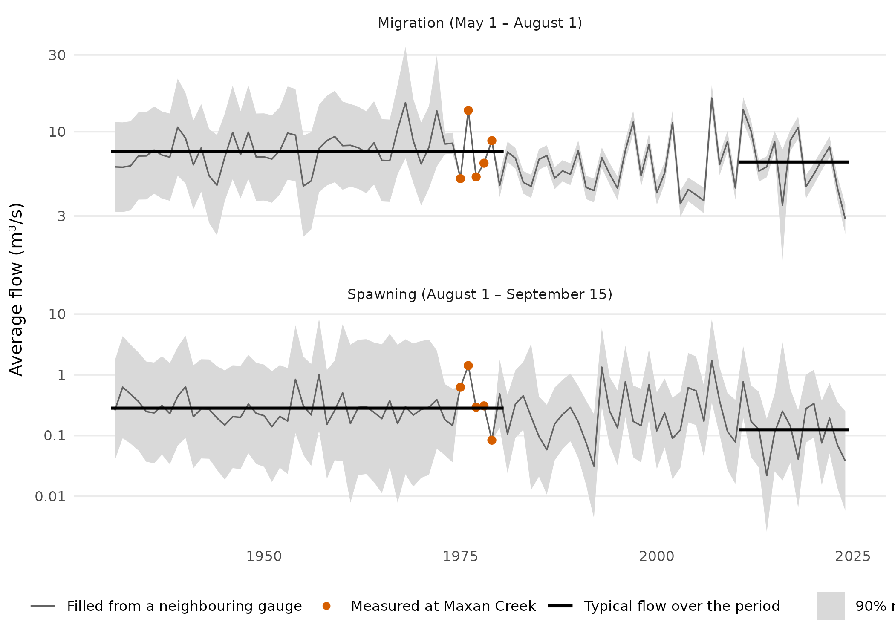

Maxan Creek runs into Bulkley Lake, at the head of the Bulkley River.
Chinook salmon use the upper Bulkley year round: adults spawn there in
August and September, their eggs stay in the gravel until the fry emerge
in spring, and the young rear in the river and its spawning creeks,
Maxan Creek among them. In Maxan Creek, surveys in Fisheries and Oceans
Canada’s salmon escapement records found Chinook in some years between
the late 1980s and the early 2000s. Gottesfeld and Rabnett suggest its
main spawning grounds lie in the reach between the outlet of Maxan Lake
and Foxy Creek, and note that low flows can leave the creek partly dry
and impassable to fish, and that beaver activity has affected it. It was
gauged for only five summers, 1975–1979. This article uses the R package
wet
to fill in its flow for the years it was not measured, from gauges
nearby, and asks how flow has changed in two Chinook windows: adult
migration (May 1 – August 1) and spawning (August 1 – September 15).
The answer. In the spawning window, Maxan Creek’s flow in a typical year of 2011–2024 was 56% lower than in 1931–1980, with a 90% range of 28%–73% lower, and its lowest seven-day flow fell by about two thirds. The migration-window change is small and uncertain: 14% lower, with a range from 33% lower to 9% higher.
Where is Maxan Creek?
Maxan Creek drains 362 km² of plateau east of Houston, and every gauge it borrows from is within about 90 km.

Maxan Creek’s gauge and catchment (362 km²), and the neighbouring gauges it borrows from. Maxan’s and Buck Creek’s catchments lie inside the Bulkley gauge’s near Houston.
How has flow changed?

Average flow in each window, 1931–2024 (log scale). Points are the five measured summers; the line fills the other years from one nearby gauge each, shaded by its 90% range. Black lines are each period’s typical flow (the geometric mean), 1931–1980 and 2011–2024: their ratio is the change.
| Window | Flow | Typical year, 2011–2024 against 1931–1980 | 90% range |
|---|---|---|---|
| Migration | Window average | −14% | −33% to +9% |
| Spawning | Window average | −56% | −73% to −28% |
| Spawning | Lowest seven days | −65% | −78% to −43% |
How can five summers say this?
Two routes fill the years Maxan Creek was not measured, each scored at gauges with fuller records. A score of 1 is a perfect match, and 0 is no better than calling every year typical.
- Filling the record. Each missing year comes from the gauge nearest in place and size that was measured in Maxan’s five summers and has a record that year, through a fit between the logs of its flow and Maxan’s over those summers. At 21 gauges, each record was cut to five years at a time, filled back out and scored on the years it had lost: a median of 0.50 in the migration window and 0.42 in the spawning window, with the 90% range holding the measured flow in 85–88% of those years.
- Borrowing neighbours’ departures. Each year takes the weighted mean departure from normal (each gauge’s 1981–2010 average) at those of the five gauges nearest in place and size, with ten years of record then, that have that year, so needs no record at Maxan. Leaving out each of 31 gauges in turn, it scored a median of 0.63 in the migration window and 0.49 in the spawning window, and 0.92 and 0.59 on Maxan’s own five summers.
The borrowed departures reach only 29–30 of the 50 years before 1981, most of them from one gauge. They give smaller drops, 3% lower in the migration window and 46% lower in the spawning window, but the same picture: a much drier spawning window, and little change in migration.
Does snow explain it?
On each of the three catchments on the map, half of each year’s snowmelt came about ten days earlier in 2011–2025 than in 1950–1980, and the water in the peak snowpack was 3–4% lower. Migration-window flow follows the snow: at all three gauges (at Maxan, over its filled record), a year whose half-melt came ten days later carried about a quarter more flow, and one with 100 mm more water in the peak snowpack about a third more. Spawning-window flow does not: each of these two measures of snow explains at most 6% of its variation between years at any gauge.
Where could it be wrong?
- Each filled year is estimated from a single nearby gauge, using how that gauge’s flow and Maxan’s moved together in the five summers both were measured. Five summers is a short base, and any error in it carries into every year filled from that gauge.
- Most years before 1981 are estimated from the Bulkley at Quick, a much larger river whose catchment takes in Maxan Creek’s and the Morice River’s, so those years partly follow that whole basin rather than Maxan alone: 31 of the 50 in the migration window.
- Spawning-window flows are small, under 0.5 m³/s in 80 of the 94 years, so a small change in flow is a large one in percent.
- The snow comes on cells a tenth of a degree across, about 11 by 6.5 km here, coarse for a 362 km² watershed.
- The windows come from the literature for the Bulkley, not from Maxan Creek.
Software and citation
The flows in this article are from HYDAT release 2026-07-17; the snow
is ERA5-Land, summarised per year by the R package cd
(its layers at commit 349f9d7); the catchments and streams are the
Freshwater Atlas’s, through fwapg. The data were bundled at
wet commit be14851. How the record is filled and scored is
set out in wet’s
research notes.
-
wet0.4.29, doi:10.5281/zenodo.23305781. Irvine A (2026). wet: Stream Flow and Water Temperature for the BC Freshwater Atlas. New Graph Environment Ltd. doi:10.5281/zenodo.23305781 https://doi.org/10.5281/zenodo.23305781. Version 0.4.29, https://github.com/NewGraphEnvironment/wet. -
cd0.6.13, doi:10.5281/zenodo.23264994, commit86989e3. Irvine A (2026). cd: How far any BC watershed’s climate has shifted from your chosen baseline. New Graph Environment Ltd. doi:10.5281/zenodo.23264994 https://doi.org/10.5281/zenodo.23264994. Version 0.6.13, https://github.com/NewGraphEnvironment/cd. -
ggplot24.0.3. Wickham H (2016). ggplot2: Elegant Graphics for Data Analysis. Springer-Verlag New York. ISBN 978-3-319-24277-4. https://ggplot2.tidyverse.org. -
gq0.16.1, doi:10.5281/zenodo.23524719, commitaa082d0. Irvine A (2026). gq: Cartographic Style Management Across Rendering Targets. New Graph Environment Ltd. doi:10.5281/zenodo.23524719 https://doi.org/10.5281/zenodo.23524719. Version 0.16.1, https://github.com/NewGraphEnvironment/gq. -
sf1.1-3, doi:10.1201/9780429459016. Pebesma E, Bivand R (2023). Spatial Data Science: With applications in R. Chapman and Hall/CRC. doi:10.1201/9780429459016 https://doi.org/10.1201/9780429459016. https://r-spatial.org/book/.
Cite wet by the DOI above, which resolves to its latest
release.
Data: daily flow from the Water Survey of Canada’s HYDAT, release 2026-07-17; snow from Muñoz-Sabater, J. and others (2021), ERA5-Land: a state-of-the-art global reanalysis dataset for land applications, Earth System Science Data 13, 4349–4383, doi:10.5194/essd-13-4349-2021; the Chinook windows from Gottesfeld, A. and Rabnett, K. (2007), Skeena Fish Populations and their Habitat, Skeena Fisheries Commission, and from the same report when Chinook fry emerge (p. 29), the upper Bulkley’s spawning months and rearing streams (p. 355), Maxan Creek’s spawning grounds and beaver activity (p. 357) and its low flows (pp. 342 and 357); the spawner surveys from Fisheries and Oceans Canada’s New Salmon Escapement Database System (NuSEDS), release of 1 June 2026, https://open.canada.ca/data/en/dataset/c48669a3-045b-400d-b730-48aafe8c5ee6; the stream network from the Freshwater Atlas Stream Network (Province of British Columbia, Ministry of Forests, Lands, Natural Resource Operations and Rural Development, 2021, https://catalogue.data.gov.bc.ca/dataset/freshwater-atlas-stream-network), held in a database by Norris, S. (2024), fwapg, https://github.com/smnorris/fwapg; place names from BC Geographic Names.